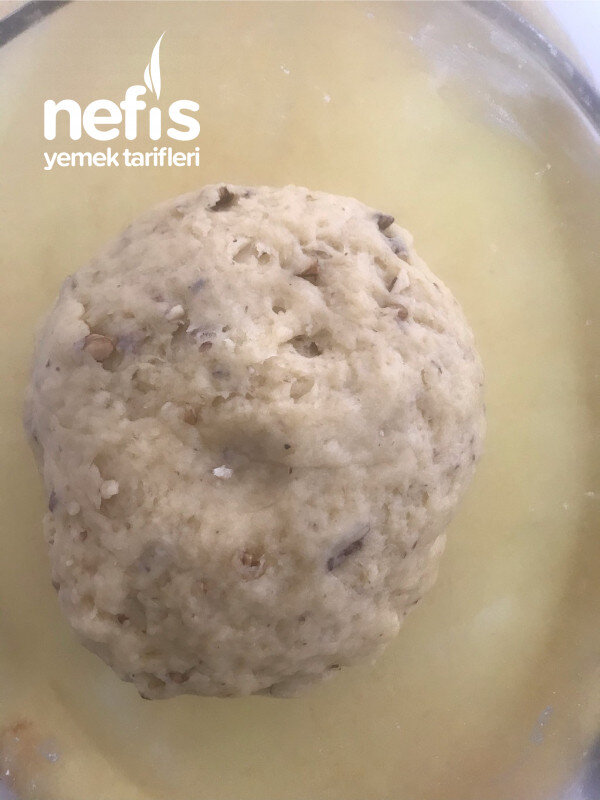
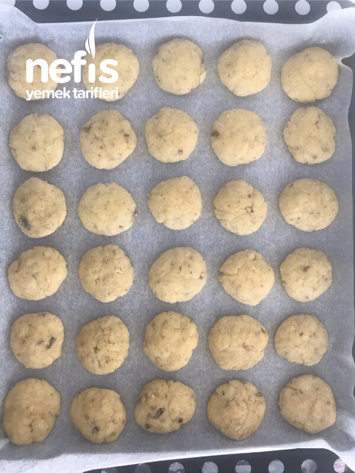
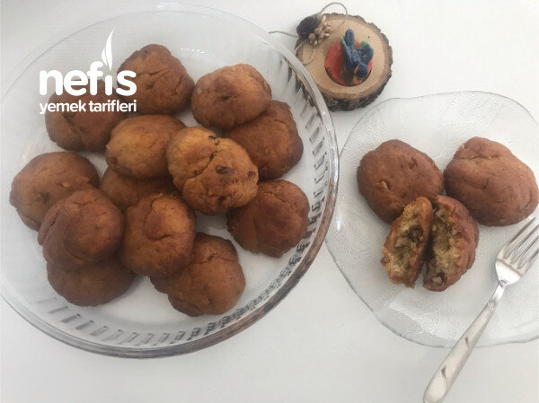
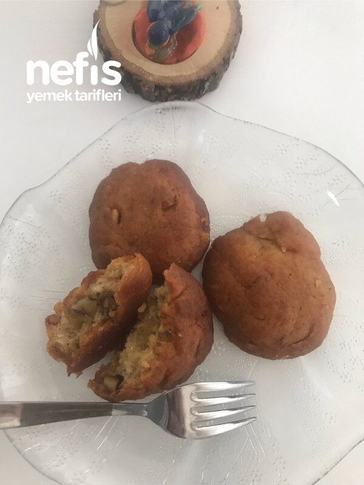
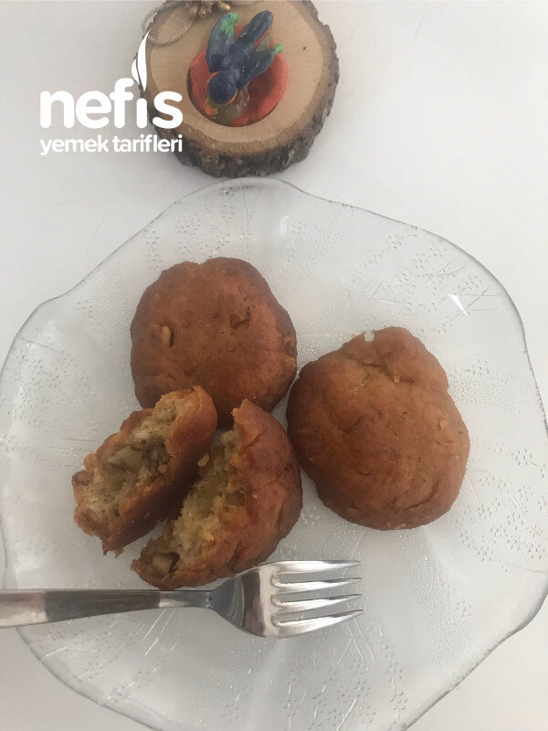

Nefis Şekerpare
2021-05-23
← Tüm tarifler

🍽️ 12-14 kişilik
⏱️ Hazırlık: 20 dk
🔥 Pişirme: 30 dk
🏷️ Aperatifler
Malzemeler
1 yumurta sarısı
1 çay bardağı kırılmış ceviz ya da fındık içi
1 kaşık yoğurt
250 gram ılık margarin
2 kaşık şeker
1 paket kabartma tozu
Un
2 bardak şeker
2,5 bardak su
Hazırlanışı
Ilık margarin biraz un ile karıştırılır.
Ayrı bir kapta yoğurt ve yumurta sarısı karıştırılır, margarinli una karıştırılır.
2 kaşık şeker, ceviz veya fındık içi ilave edilir.
Alabildiği kadar un ve kabartma tozu ilave edilir.
Kurabiye hamuru kıvamında hamur hazırlanır.
İstenilen büyüklükte parçalar kopartılarak yuvarlanır.
Yuvarlanan hamurlar avuç içiyle yassı hale getirilip tepsiye dizilir.
200 derecede üzeri kızarana kadar pişirilir.
Şerbeti için 2 bardak şeker, 2,5 bardak su ile kaynatılıp şerbet hazırlanır (Kaynamaya başlayınca altını kısıp 7-8 dakika kaynaması yeterli olur)
Birkaç damla limon sıkılabilir. Her ikisi de piştikten sonra 5 er dakika dinlendirilip şerbet şekerparelerin üzerine dökülür.
Üzerine tepsi örtülür. Şerbetini çeken nefis şekerparelerimiz servise hazır. Afiyet olsun 😊
Fotoğraflar



